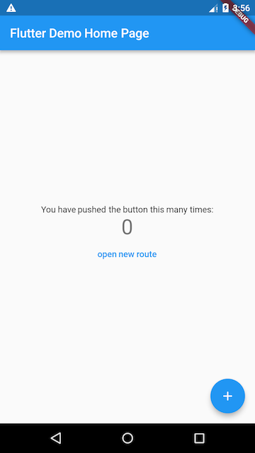
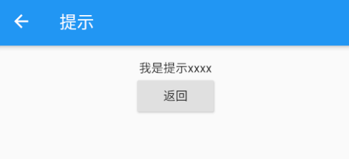

2.4 路由管理
路由（Route）在移动开发中通常指页面（Page），这跟 Web 开发中单页应用的 Route 概念意义是相同的，Route 在 Android中 通常指一个 Activity，在 iOS 中指一个 ViewController。所谓路由管理，就是管理页面之间如何跳转，通常也可被称为导航管理。Flutter 中的路由管理和原生开发类似，无论是 Android 还是 iOS，导航管理都会维护一个路由栈，路由入栈（push）操作对应打开一个新页面，路由出栈（pop）操作对应页面关闭操作，而路由管理主要是指如何来管理路由栈。
2.4.1 一个简单示例
我们在2.1节“计数器”示例的基础上，做如下修改：
-
创建一个新路由，命名“NewRoute”
class NewRoute extends StatelessWidget { @override Widget build(BuildContext context) { return Scaffold( appBar: AppBar( title: Text("New route"), ), body: Center( child: Text("This is new route"), ), ); } }新路由继承自
StatelessWidget，界面很简单，在页面中间显示一句"This is new route"。 -
在
_MyHomePageState.build方法中的Column的子widget中添加一个按钮（TextButton） :Column( mainAxisAlignment: MainAxisAlignment.center, children: <Widget>[ ... //省略无关代码 TextButton( child: Text("open new route"), onPressed: () { //导航到新路由 Navigator.push( context, MaterialPageRoute(builder: (context) { return NewRoute(); }), ); }, ), ], )我们添加了一个打开新路由的按钮，点击该按钮后就会打开新的路由页面，效果如图 2-9 和 2-10 所示。


2.4.2 MaterialPageRoute
MaterialPageRoute继承自PageRoute类，PageRoute类是一个抽象类，表示占有整个屏幕空间的一个模态路由页面，它还定义了路由构建及切换时过渡动画的相关接口及属性。MaterialPageRoute 是 Material组件库提供的组件，它可以针对不同平台，实现与平台页面切换动画风格一致的路由切换动画：
- 对于 Android，当打开新页面时，新的页面会从屏幕底部滑动到屏幕顶部；当关闭页面时，当前页面会从屏幕顶部滑动到屏幕底部后消失，同时上一个页面会显示到屏幕上。
- 对于 iOS，当打开页面时，新的页面会从屏幕右侧边缘一直滑动到屏幕左边，直到新页面全部显示到屏幕上，而上一个页面则会从当前屏幕滑动到屏幕左侧而消失；当关闭页面时，正好相反，当前页面会从屏幕右侧滑出，同时上一个页面会从屏幕左侧滑入。
下面我们介绍一下MaterialPageRoute 构造函数的各个参数的意义：
MaterialPageRoute({
WidgetBuilder builder,
RouteSettings settings,
bool maintainState = true,
bool fullscreenDialog = false,
})
builder是一个WidgetBuilder类型的回调函数，它的作用是构建路由页面的具体内容，返回值是一个widget。我们通常要实现此回调，返回新路由的实例。settings包含路由的配置信息，如路由名称、是否初始路由（首页）。maintainState：默认情况下，当入栈一个新路由时，原来的路由仍然会被保存在内存中，如果想在路由没用的时候释放其所占用的所有资源，可以设置maintainState为false。fullscreenDialog表示新的路由页面是否是一个全屏的模态对话框，在 iOS 中，如果fullscreenDialog为true，新页面将会从屏幕底部滑入（而不是水平方向）。
如果想自定义路由切换动画，可以自己继承 PageRoute 来实现，我们将在后面介绍动画时，实现一个自定义的路由组件。
2.4.3 Navigator
Navigator是一个路由管理的组件，它提供了打开和退出路由页方法。Navigator通过一个栈来管理活动路由集合。通常当前屏幕显示的页面就是栈顶的路由。Navigator提供了一系列方法来管理路由栈，在此我们只介绍其最常用的两个方法：
1. Future push(BuildContext context, Route route)
将给定的路由入栈（即打开新的页面），返回值是一个Future对象，用以接收新路由出栈（即关闭）时的返回数据。
2. bool pop(BuildContext context, [ result ])
将栈顶路由出栈，result 为页面关闭时返回给上一个页面的数据。
Navigator 还有很多其他方法，如Navigator.replace、Navigator.popUntil等，详情请参考API文档或SDK 源码注释，在此不再赘述。下面我们还需要介绍一下路由相关的另一个概念“命名路由”。
3. 实例方法
Navigator类中第一个参数为context的静态方法都对应一个Navigator的实例方法， 比如Navigator.push(BuildContext context, Route route) 等价于Navigator.of(context).push(Route route) ，下面命名路由相关的方法也是一样的。
2.4.4 路由传值
很多时候，在路由跳转时我们需要带一些参数，比如打开商品详情页时，我们需要带一个商品id，这样商品详情页才知道展示哪个商品信息；又比如我们在填写订单时需要选择收货地址，打开地址选择页并选择地址后，可以将用户选择的地址返回到订单页等等。下面我们通过一个简单的示例来演示新旧路由如何传参。
下面我们通过一个例子来演示：创建一个TipRoute路由，它接受一个提示文本参数，负责将传入它的文本显示在页面上，另外TipRoute中我们添加一个“返回”按钮，点击后在返回上一个路由的同时会带上一个返回参数，下面我们看一下实现代码。
TipRoute实现代码：
class TipRoute extends StatelessWidget {
TipRoute({
Key key,
required this.text, // 接收一个text参数
}) : super(key: key);
final String text;
@override
Widget build(BuildContext context) {
return Scaffold(
appBar: AppBar(
title: Text("提示"),
),
body: Padding(
padding: EdgeInsets.all(18),
child: Center(
child: Column(
children: <Widget>[
Text(text),
ElevatedButton(
onPressed: () => Navigator.pop(context, "我是返回值"),
child: Text("返回"),
)
],
),
),
),
);
}
}
下面是打开新路由TipRoute的代码：
class RouterTestRoute extends StatelessWidget {
@override
Widget build(BuildContext context) {
return Center(
child: ElevatedButton(
onPressed: () async {
// 打开`TipRoute`，并等待返回结果
var result = await Navigator.push(
context,
MaterialPageRoute(
builder: (context) {
return TipRoute(
// 路由参数
text: "我是提示xxxx",
);
},
),
);
//输出`TipRoute`路由返回结果
print("路由返回值: $result");
},
child: Text("打开提示页"),
),
);
}
}
运行上面代码，点击RouterTestRoute页的“打开提示页”按钮，会打开TipRoute页，运行效果如图2-11所示下：

需要说明：
-
提示文案“我是提示xxxx”是通过
TipRoute的text参数传递给新路由页的。我们可以通过等待Navigator.push(…)返回的Future来获取新路由的返回数据。 -
在
TipRoute页中有两种方式可以返回到上一页；第一种方式是直接点击导航栏返回箭头，第二种方式是点击页面中的“返回”按钮。这两种返回方式的区别是前者不会返回数据给上一个路由，而后者会。下面是分别点击页面中的返回按钮和导航栏返回箭头后，RouterTestRoute页中print方法在控制台输出的内容：I/flutter (27896): 路由返回值: 我是返回值 I/flutter (27896): 路由返回值: null
上面介绍的是非命名路由的传值方式，命名路由的传值方式会有所不同，我们会在下面介绍命名路由时介绍。
2.4.5 命名路由
所谓“命名路由”（Named Route）即有名字的路由，我们可以先给路由起一个名字，然后就可以通过路由名字直接打开新的路由了，这为路由管理带来了一种直观、简单的方式。
1. 路由表
要想使用命名路由，我们必须先提供并注册一个路由表（routing table），这样应用程序才知道哪个名字与哪个路由组件相对应。其实注册路由表就是给路由起名字，路由表的定义如下：
Map<String, WidgetBuilder> routes;
它是一个Map，key为路由的名字，是个字符串；value是个builder回调函数，用于生成相应的路由widget。我们在通过路由名字打开新路由时，应用会根据路由名字在路由表中查找到对应的WidgetBuilder回调函数，然后调用该回调函数生成路由widget并返回。
2. 注册路由表
路由表的注册方式很简单，我们回到之前“计数器”的示例，然后在MyApp类的build方法中找到MaterialApp，添加routes属性，代码如下：
MaterialApp(
title: 'Flutter Demo',
theme: ThemeData(
primarySwatch: Colors.blue,
),
//注册路由表
routes:{
"new_page":(context) => NewRoute(),
... // 省略其他路由注册信息
} ,
home: MyHomePage(title: 'Flutter Demo Home Page'),
);
现在我们就完成了路由表的注册。上面的代码中home路由并没有使用命名路由，如果我们也想将home注册为命名路由应该怎么做呢？其实很简单，直接看代码：
MaterialApp(
title: 'Flutter Demo',
initialRoute:"/", //名为"/"的路由作为应用的home(首页)
theme: ThemeData(
primarySwatch: Colors.blue,
),
//注册路由表
routes:{
"new_page":(context) => NewRoute(),
"/":(context) => MyHomePage(title: 'Flutter Demo Home Page'), //注册首页路由
}
);
可以看到，我们只需在路由表中注册一下MyHomePage路由，然后将其名字作为MaterialApp的initialRoute属性值即可，该属性决定应用的初始路由页是哪一个命名路由。
3. 通过路由名打开新路由页
要通过路由名称来打开新路由，可以使用Navigator 的pushNamed方法：
Future pushNamed(BuildContext context, String routeName,{Object arguments})
Navigator 除了pushNamed方法，还有pushReplacementNamed等其他管理命名路由的方法，读者可以自行查看API文档。接下来我们通过路由名来打开新的路由页，修改TextButton的onPressed回调代码，改为：
onPressed: () {
Navigator.pushNamed(context, "new_page");
//Navigator.push(context,
// MaterialPageRoute(builder: (context) {
// return NewRoute();
//}));
},
热重载应用，再次点击“open new route”按钮，依然可以打开新的路由页。
4. 命名路由参数传递
在Flutter最初的版本中，命名路由是不能传递参数的，后来才支持了参数；下面展示命名路由如何传递并获取路由参数：
我们先注册一个路由：
routes:{
"new_page":(context) => EchoRoute(),
} ,
在路由页通过RouteSetting对象获取路由参数：
class EchoRoute extends StatelessWidget {
@override
Widget build(BuildContext context) {
//获取路由参数
var args=ModalRoute.of(context).settings.arguments;
//...省略无关代码
}
}
在打开路由时传递参数
Navigator.of(context).pushNamed("new_page", arguments: "hi");
5. 适配
假设我们也想将上面路由传参示例中的TipRoute路由页注册到路由表中，以便也可以通过路由名来打开它。但是，由于TipRoute接受一个text 参数，我们如何在不改变TipRoute源码的前提下适配这种情况？其实很简单：
MaterialApp(
... //省略无关代码
routes: {
"tip2": (context){
return TipRoute(text: ModalRoute.of(context)!.settings.arguments);
},
},
);
2.4.6 路由生成钩子
假设我们要开发一个电商App，当用户没有登录时可以看店铺、商品等信息，但交易记录、购物车、用户个人信息等页面需要登录后才能看。为了实现上述功能，我们需要在打开每一个路由页前判断用户登录状态！如果每次打开路由前我们都需要去判断一下将会非常麻烦，那有什么更好的办法吗？答案是有！
MaterialApp有一个onGenerateRoute属性，它在打开命名路由时可能会被调用，之所以说可能，是因为当调用Navigator.pushNamed(...)打开命名路由时，如果指定的路由名在路由表中已注册，则会调用路由表中的builder函数来生成路由组件；如果路由表中没有注册，才会调用onGenerateRoute来生成路由。onGenerateRoute回调签名如下：
Route<dynamic> Function(RouteSettings settings)
有了onGenerateRoute回调，要实现上面控制页面权限的功能就非常容易：我们放弃使用路由表，取而代之的是提供一个onGenerateRoute回调，然后在该回调中进行统一的权限控制，如：
MaterialApp(
... //省略无关代码
onGenerateRoute:(RouteSettings settings){
return MaterialPageRoute(builder: (context){
String routeName = settings.name;
// 如果访问的路由页需要登录，但当前未登录，则直接返回登录页路由，
// 引导用户登录；其他情况则正常打开路由。
}
);
}
);
注意，
onGenerateRoute只会对命名路由生效。
2.4.7 总结
本章先介绍了Flutter中路由管理、传参的方式，然后又着重介绍了命名路由相关内容。在此需要说明一点，由于命名路由只是一种可选的路由管理方式，在实际开发中，读者可能心中会犹豫到底使用哪种路由管理方式。在此，根据笔者经验，建议读者最好统一使用命名路由的管理方式，这将会带来如下好处：
- 语义化更明确。
- 代码更好维护；如果使用匿名路由，则必须在调用
Navigator.push的地方创建新路由页，这样不仅需要import新路由页的dart文件，而且这样的代码将会非常分散。 - 可以通过
onGenerateRoute做一些全局的路由跳转前置处理逻辑。
综上所述，笔者比较建议使用命名路由，当然这并不是什么金科玉律，读者可以根据自己偏好或实际情况来决定。
另外，还有一些关于路由管理的内容我们没有介绍，比如路由MaterialApp中还有navigatorObservers和onUnknownRoute两个回调属性，前者可以监听所有路由跳转动作，后者在打开一个不存在的命名路由时会被调用，由于这些功能并不常用，而且也比较简单，我们便不再花费篇幅来介绍了，读者可以自行查看API文档。